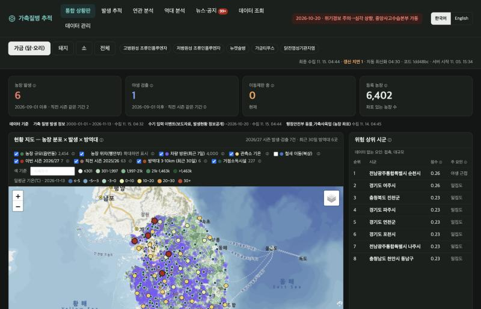
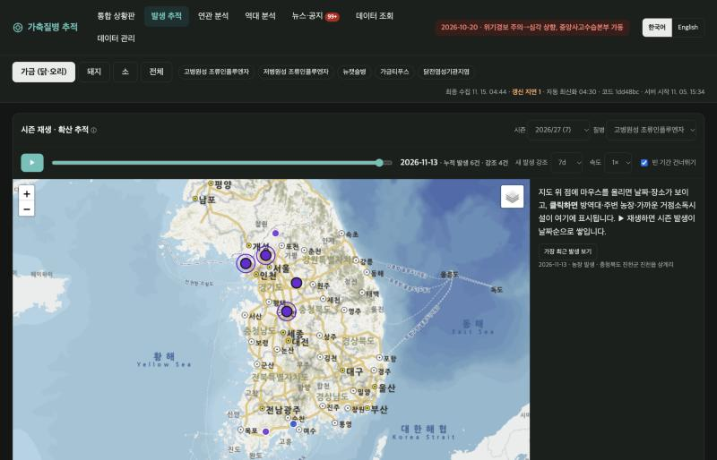
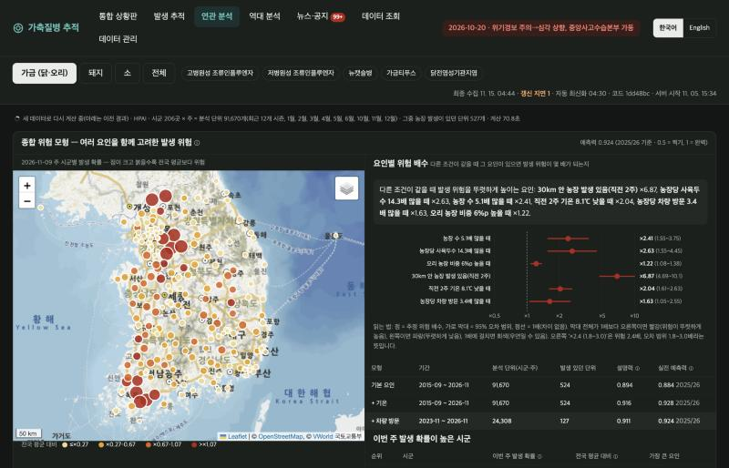
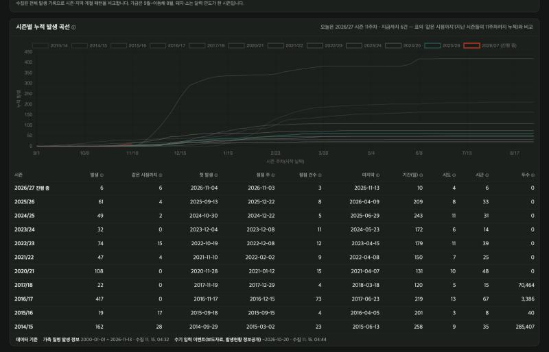

제품
전국 농장의 가축질병 발생을
한 화면에서 따라갑니다.
고병원성 조류인플루엔자(HPAI), 구제역, 아프리카돼지열병을 비롯해 가금·돼지·소의 법정 가축전염병 열네 가지를 다룹니다.
화면
농장 분포와 발생 지점, 방역대를 한 지도에 겹쳐 놓습니다. 읍면동 사육두수, 축산차량 방문, 관측소 기온, 철새 이동 경로를 각각 켜고 끌 수 있습니다. 옆에는 위험 상위 시군과 최근 뉴스가 붙습니다.

한 시즌을 처음부터 되감아 재생합니다. 발생이 날짜순으로 쌓이고, 점 위에 마우스를 올리면 날짜와 장소가, 눌러 보면 방역대와 가까운 거점소독시설이 지도에 표시됩니다.

고병원성 조류인플루엔자를 대상으로, 시군과 주를 묶은 단위에서 발생 위험을 추정합니다. 요인마다 위험이 몇 배가 되는지를 오차 범위와 함께 보여 줍니다. 30km 안에서 직전 2주에 발생이 있었으면 ×6.87, 직전 2주 기온이 8.1℃ 낮으면 ×2.04입니다. 각 주의 요인은 그 주 이전 자료로만 만듭니다.

시즌별 누적 발생 곡선을 겹쳐 같은 시점끼리 비교합니다. 올해가 지난 시즌들의 같은 주차에 견줘 어디쯤인지 바로 보입니다. 아래 표에는 시즌마다 첫 발생일과 마지막 발생일, 기간, 퍼진 시군 수와 두수가 붙습니다.

다루는 질병
축종을 고르면 그 축종의 질병만 추려 봅니다. 고병원성 조류인플루엔자는 흔히 조류독감 또는 AI로 불리며, 영문 약어는 HPAI입니다.
농장 발생과 야생 검출을 나눠 표시하고, 질병별로 걸러 볼 수 있습니다.
자료
과거 자료에서 함께 나타난 정도이며 원인을 증명하지는 않습니다.
문의